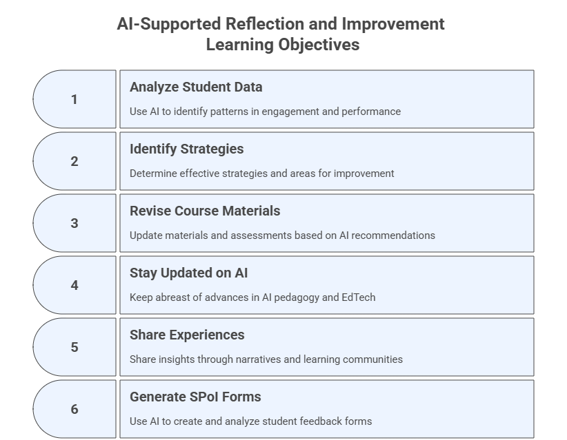

8. AI-Supported Reflection and Improvement#
Closing the loop through critical self-analysis and iteration
Generative AI enhances your ability to evaluate, reflect on, and iteratively improve your teaching. In this final module, you will use GenAI to identify what worked and what did not, revise materials and strategies, stay updated with research and innovations, share reflective practices, and analyze student feedback using AI-assisted analytics. Across the Teaching with AI program, you have progressively built an AI Workspace and a Course Personalized Assistant. This module focuses on using these tools, and additional GenAI tools, to drive evidence-based improvement.
Learning Objectives#
After completing this module, participants will be able to:
Use GenAI to analyze patterns in student engagement, performance, and feedback.
Identify effective strategies and areas for improvement across a full course cycle.
Revise course materials, assessments, and teaching strategies using AI recommendations.
Stay updated on advances in AI pedagogy and EdTech tools.
Share experiences through reflective AI-crafted narratives and faculty-learning communities.
Use AI to generate SPoI forms and analyze qualitative and quantitative student feedback.
Update their AI Workspace and Personalized Assistant where appropriate.

8.1 Identify What Worked, What Did Not, and Why#
Purpose#
Use GenAI to analyze course artifacts, such as quizzes, assignments, participation data, notes and reflections, and identify the elements that most influenced learning.
Task#
Upload course data (or paste key excerpts) into your AI Workspace and request a deep-pattern analysis.
Prompt Template — Instructional + Role-Based#
You are a course evaluator on [Course Topic].
Analyze the outcomes from the attached resources.
Identify patterns indicating which instructional elements contributed most to student learning.
Explain WHY certain strategies were more or less effective.
Include:
- Key strengths
- Weaknesses or gaps
- Likely underlying causes
- Evidence supporting each insight
8.2 Revise Materials, Strategies, and Assessments for Future Iterations#
Purpose#
Use AI to propose targeted revisions based on the findings above.
Task#
Prompt AI to recommend changes to worksheets, slides, assignments, rubrics, or course structure.
Prompt Template — Instructional + Role-Based#
You are a curriculum revision assistant.
Based on the course performance data and feedback excerpts below,
recommend revisions to assignments, class materials, and instructional strategies.
Your suggestions must improve:
- clarity
- engagement
- workload balance
- alignment with learning outcomes
8.3 Stay Engaged with Research and Innovations#
Purpose#
Use AI research tools to track pedagogical innovations, new AI capabilities, and emerging teaching practices.
Sample Tools#
Consensus.app – evidence-based conclusions directly from research
Perplexity Academic – literature synthesis with citations
SciSpace – grounded summaries and concept maps
Google Scholar Labs – trend detection
NotebookLM – build a living “AI Pedagogy Research Notebook”
Prompt Template — Zero-Shot
Provide a curated list of the top 5 recent articles, reports, or tools related to [Course Topic].
Summarize each item, include citations, and propose one way it could influence future course iterations.
8.5 Reflect on Teaching Effectiveness Using Feedback and Data#
Purpose#
Use AI to synthesize quantitative and qualitative student feedback, combining SPoI data, assignment outcomes, and reflection notes.
Use Case 1: Create a Student Perception of Instruction Form (SPoI)#
Prompt Template — Role-Based with Embedded Instructional Structure
You are an instructional designer tasked with creating a course evaluation form titled "Student Perception of Instruction (SPoI)" for the course [Course Name].
Use the set of questions and structure proposed below.
## Instructions:
1. Group the questions into quantitative (Likert scale) and qualitative (open-ended) sections.
2. For each **quantitative question**, provide a 5-point Likert scale with the following response options (unless otherwise specified):
- Strongly Agree
- Agree
- Neutral
- Disagree
- Strongly Disagree
- Not Applicable (optional where relevant)
3. For each **qualitative question**, provide a space for open-ended feedback.
4. Maintain the order, labeling, and clarity of the original items.
5. Return the output in a markdown format suitable for use in an online survey or printed form.
## Open-Ended Questions (Qualitative):
1. How many hours per week did you spend on this course outside of class time?
2. Describe the instructor’s overall presentation and explanation of content.
3. What instructional methods helped you learn the material?
4. Which course materials were most useful? Please explain.
5. Which course materials were least useful? Please explain.
6. Which assignments best supported your learning? Please explain.
7. Which assignments were most troublesome? Please explain.
8. Would you recommend this class to others? Why or why not?
## Likert Scale Questions (Quantitative):
9. The instructor seems concerned with whether I learned the course content.
10. The instructor helped me understand the course content.
11. The instructor generated interest in the course.
12. The learning environment was positive and engaging.
13. Course activities and assignments facilitated my ability to analyze, solve problems, and/or think critically.
14. The following helped with my learning in the course:
a. How the course was organized
b. How the course content was delivered
c. Interactions between the instructor and the students
d. Availability of the instructor outside of class
e. Required materials (e.g., books, publications)
15. Overall, this course was effective in improving my knowledge of course content.
16. Overall, this course was a valuable educational experience.
17. (If applicable) For service-learning courses: Were the service-learning activities related to the content of the course? Please explain.
## Output Format:
Please return the form formatted in a DOCX file ready to be imported by a Google or Microsoft Form.
Additional Prompt Variant — Role-Based without Structure
You are an instructional designer tasked with creating a Student Perception of Instruction (SPoI) form for [Course Name].
Follow the structure below:
- Group questions into quantitative (Likert) and qualitative (open-ended)
- Provide a 5-point Likert scale
- Maintain clarity, order, and labeling
[Insert SPoI questions here]
Return full SPoI instrument ready for use in Microsoft/Google Forms.
Use Case 2: Use GenAI to analyze the students feedback data#
Prompt Template — Instructional Prompt
Given the student feedback provided, summarize:
- Key strengths
- Key weaknesses
- Patterns across comments
- Teaching strategies that worked well
- Areas needing improvement
Generate:
- Charts or graphs
- Key performance indicators (KPIs)
- A short narrative interpreting results
8.6 Updates to Your AI Workspace and Personalized Assistant#
Minimal updates are needed beyond uploading new reflection materials.
A. Workspace (Project) Updates#
Upload:
SPoI form
Summary dashboards and KPIs
Revised versions of assignments or materials
Teaching reflections or revisions
Add under Capabilities:
- Generate improvement recommendations based on performance data
- Track version changes across course iterations
Add under Behaviors:
- Flag recurring issues across course versions
- Suggest evidence-based improvements using research insights
B. Personalized Assistant (PA) Updates#
Only add student-facing improvements where relevant. No structural expansion is needed.
Upload to PA:
simplified SPoI instructions (if you want students to complete them)
reflection prompts for metacognition (if used as part of course activities)
8.7 Exercises#
Exercise 1 — Pattern Analysis#
Upload graded work and ask AI to identify learning patterns.
Exercise 2 — Redesign Assignment#
Select an assignment and ask AI for a revised version addressing identified gaps.
Exercise 3 — Research Sprint#
Use Consensus or Perplexity Academic to gather new evidence for course design.
Exercise 4 — Peer-Reflection Post#
Generate a short reflection and share it with a faculty community.
Exercise 5 — SPoI Data Synthesis#
Upload past SPoI results and generate a dashboard.
8.9 Reflection#
What teaching strategies were most effective, according to AI-assisted analysis?
Which parts of your course need redesign in the next iteration?
How can AI help you maintain a living, iterative improvement cycle?
What new research or tools will you adopt for your next teaching cycle?
How will your AI Workspace evolve next semester as a teaching partner?
Thank you!#
Thank you for your engagement throughout this training. We encourage you to experiment, reflect, and share your insights as you move forward in teaching and learning with AI.